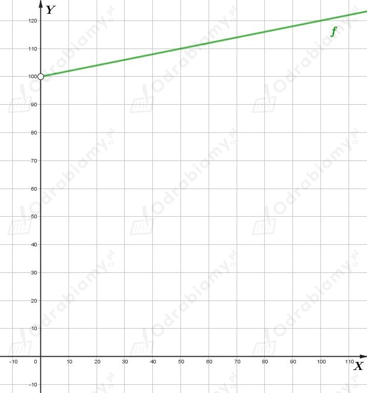

a)
Dane są punkty
Wyznaczmy współczynnik kierunkowy prostej przechodzącej przez dane punkty. Mamy:
Niech 𝛼 będzie kątem nachylenia tej prostej do osi OX. Wtedy
Korzystając z przybliżonych wartości funkcji trygonometrycznych mamy:
b)
Dane są punkty
Wyznaczmy współczynnik kierunkowy prostej przechodzącej przez dane punkty. Mamy:
Niech 𝛼 będzie kątem nachylenia tej prostej do osi OX. Wtedy
Korzystając z przybliżonych wartości funkcji trygonometrycznych mamy:
Korzystając ze wzorów redukcyjnych mamy:
a)
Dana jest prosta określona równaniem
Podana prosta tworzy z osią OX kąt o mierze 30o, stąd
Dodatkowo, wiemy, że punkt P=(-9, -2√3) należy do tej prostej, więc
Zatem szukane równanie prostej to
b)
Dana jest prosta określona równaniem
Podana prosta tworzy z osią OX kąt o mierze 150o, stąd
Dodatkowo, wiemy, że punkt P=(2√3, -2) należy do tej prostej, więc
Zatem szukane równanie prostej to
a)
Dane jest równanie, gdzie a jest parametrem.
Rozwiążmy to równanie ze względu na niewiadomą x. Mamy:
Podane równanie ma jedno rozwiązanie dla a∈R.
b)
Dane jest równanie, gdzie a jest parametrem.
Rozwiążmy to równanie ze względu na niewiadomą x. Mamy:
Jeżeli a=2, to otrzymujemy równanie:
czyli równanie sprzeczne.
Podane równanie ma jedno rozwiązanie dla a∈R\{2}, oraz nie ma żadnych rozwiązań dla a=2.
c)
Dane jest równanie, gdzie a jest parametrem.
Rozwiążmy to równanie ze względu na niewiadomą x. Mamy:
Jeżeli a=-1, to otrzymujemy równanie:
czyli równanie tożsamościowe.
Podane równanie ma jedno rozwiązanie dla a∈R\{-1}, oraz ma nieskończenie wiele rozwiązań dla a=-1.
d)
Dane jest równanie, gdzie a jest parametrem.
Rozwiążmy to równanie ze względu na niewiadomą x. Mamy:
Jeżeli a=0, to otrzymujemy równanie:
czyli równanie tożsamościowe.
Podane równanie ma jedno rozwiązanie dla a∈R\{0}, oraz ma nieskończenie wiele rozwiązań dla a=0.
e)
Dane jest równanie, gdzie a jest parametrem.
Rozwiążmy to równanie ze względu na niewiadomą x. Mamy:
Jeżeli a=0, to otrzymujemy równanie:
czyli równanie sprzeczne.
Jeżeli a=1, to otrzymujemy równanie:
czyli równanie tożsamościowe.
Podane równanie ma jedno rozwiązanie dla a∈R\{0, 1}, oraz ma nieskończenie wiele rozwiązań dla a=1, a nie ma żadnych rozwiązań dla a=0.
f)
Dane jest równanie, gdzie a jest parametrem.
Rozwiążmy to równanie ze względu na niewiadomą x. Mamy:
Jeżeli a=1, to otrzymujemy równanie:
czyli równanie tożsamościowe.
Jeżeli a=-1, to otrzymujemy równanie:
czyli równanie sprzeczne.
Podane równanie ma jedno rozwiązanie dla a∈R\{-1, 1}, oraz ma nieskończenie wiele rozwiązań dla a=1, a nie ma żadnych rozwiązań dla a=-1.
a)
Dane jest równanie z niewiadomą x oraz parametrem a. Rozwiązując to równanie mamy:
Wyznaczmy wartości parametru a, dla których podane równanie ma rozwiązanie dodatnie. Mamy więc:
Licznik ułamka jest liczbą dodatnią, więc mianownik również musi być liczbą dodatnią. Mamy:
czyli
b)
Dane jest równanie z niewiadomą x oraz parametrem a. Rozwiązując to równanie mamy:
Wyznaczmy wartości parametru a, dla których podane równanie ma rozwiązanie dodatnie. Mamy więc:
czyli
Funkcja f określona wzorem
opisuje koszt (w złotych) wypożyczenia samochodu na jeden dzień, gdzie 40 zł jest opłatą stałą, 0,2 zł jest opłatą za każdy przejechany kilometr, a x - liczbą przejechanych kilometrów.
Wyznaczmy koszt wypożyczenia samochodu, który przejechał 500 km. Mamy:
Odp. Koszt wypożyczenia tego samochodu wynosi 140 zł.
Koszt wypożyczenia samochodu na 3 dni składa się z opłaty stałej 100 zł oraz opłaty 0,2 zł za każdy przejechany kilometr.
Zapiszmy wzór funkcji opisujący koszt wypożyczenia samochodu w zależności od liczby przejechanych kilometrów x. Mamy:
Zauważmy, że do wykresu funkcji f należą punkty (0, 100) oraz (50, 110).
Naszkicujmy wykres tej funkcji:

Wyznaczmy, ile kilometrów maksymalnie można przejechać, aby koszt wypożyczenia samochodu nie przekroczył 300 zł. Rozwiążemy nierówność:
Odp. Maksymalnie można przejechać 1000 km, aby koszt wypożyczenia nie przekroczył 300 zł.
Inwestor zakupił akcje dwóch firm za kwotę K.
Niech a będzie kwotą zainwestowaną w firmę A, natomiast b - kwotą zainwestowaną w firmę B. Mamy stąd równanie:
Po roku zysk ze sprzedaży akcji wyniósł 7%, w tym ze sprzedaży akcji firmy A - 4%, a firmy B - 8%. Mamy stąd równanie:
Zapiszmy układ równań zbudowany z powyższych równań. Mamy:
Rozwiążmy osobno drugie równanie:
A więc
Odp. Inwestor zainwestował 25% początkowego kapitału K w akcje firmy A i 75% w akcje firmy B.
Za kwotę 100 tysięcy złotych inwestor zakupił akcje firm A i B oraz obligacje.
Niech a będzie kwotą wydaną na zakup akcji firmy A, a b - zakup akcji firmy B.
Zatem
jest kwotą wydaną na zakup obligacji.
Po roku, zysk ze sprzedaży akcji wynosił 5,6%, w tym ze sprzedaży akcji firmy A wynosił 2%, ze sprzedaży akcji firmy B wynosił 6%. Dostajemy stąd równanie:
Zysk ze sprzedaży obligacji wyniósł 4,6%. Zysk ze sprzedaży wszystkich papierów wartościowych wyniósł 5,4%. Mamy stąd:
Zapiszmy i rozwiążmy układ równań zbudowany z powyższych równań. Mamy:
Wyznaczmy kwotę wydaną na obligacje. Mamy:
Odp. Na akcje firmy A wydano 8 000 zł, na akcje firmy B wydano 72 000 zł, a na obligacje wydano 20 000 zł.